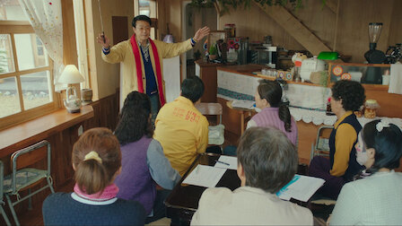

나쁜엄마
2023 | 15+ | 시즌1개 | 드라마 장르
성공만을 향해 달리던 야심만만한 검사. 갑자기 닥친 사고로 하루아침에 아이가
되어버린 후, 엄마와의 어긋난 관계를 치유할 뜻밖의 여정이 시작된다.
주연 : 라미란,이도현,안은진
크리에이터 : 심나연,배세영
무제한으로 즐기세요
영상
| 나쁜엄마
예고편: 나쁜엄마
회차
| 나쁜엄마
나쁜엄마
공개일 : 2023
성공만을 향해 달리던 야심만만한 검사. 갑자기 닥친 사고로 하루아침에 아이가 되어버린 후, 엄마와의 어긋난
관계를 치유할 뜻밖의 여정이 시작된다.
관계를 치유할 뜻밖의 여정이 시작된다.
-
1화
80분비극적인 사건을 겪고 삶이 송두리째 뒤흔들린 진영순. 자식에게만은 절대 힘든 삶을 대물림하지 않겠다는 일념으로 독하게 아들을 키운다. -
2화
71분어린 시절의 원망과 울분이 가슴 가득 응어리진 최강호. 거침없이 야망을 불태우며 커리어를 쌓아가던 중, 모진 의도를 갖고 영순을 찾아간다. -
3화
69분충격적인 사고를 당한 강호의 앞날이 불투명해진다. 그런 아들을 집으로 데리고 가는 영순. 엄마로서 과거를 만회할 기회가 왔다. -
4화
72분점차 몸을 회복해 가는 강호. 영순과의 사이도 부쩍 가까워진다. 그러나 얼마 뒤 서울에 찾아간 영순은 그간 강호가 저지른 과오의 흔적을 마주하는데. -
5화
64분집으로 돌아온 이미주. 예전과 딴판으로 바뀐 강호를 우연히 마주친다. 영순은 까탈스러운 이웃에게 무자비한 항의를 받고. -

6화
72분강호가 누군가로부터 난데없는 습격을 당한다. 우연히 좋은 사업 기회를 찾아낸 미주. 한편, 마을 사람들은 영순을 상대로 항의 시위를 벌인다. -
7화
65분무서운 소식을 접한 영순은 앞날에 대한 두려움에 휩싸인다. 여기에 난데없이 그녀를 덮친 또 다른 충격파. 영순은 별도리 없이 자신과 강호에 대해 힘겨운 결정을 내리는데. -
8화
64분강호를 한계까지 몰아붙이는 영순. 얼마 뒤 그녀는 아들이 사고 전에 남겨둔 이상한 물건을 마주한다. 한편 미주는 강호를 향한 복잡한 감정 속에 흔들리고. -
9화
60분영순과 강호는 함께 기억을 더듬어 강호의 과거를 되짚어간다. 그러다 강호의 이야기에서 또 다른 이면을 발견하는데. -
10화
70분강호에게 더 안전한 미래를 준비하는 영순. 미주와 강호는 아찔한 사건을 겪은 후 달콤한 시간을 보내고, 그로 인해 두 사람의 삶은 더욱 복잡해진다. -
11화
73분위급한 순간을 겪은 후 진실을 알게 되는 강호. 미주는 그런 강호의 곁을 지킨다. 한편 방삼식은 위험한 상황에 휘말리고. -
12화
63분농장에 가슴 서늘해지는 일이 벌어지고, 그 후 영순은 더 많은 사실을 알게 된다. 계획대로 일을 진행하는 강호. 미주와 삼식도 그 뒤를 따라 행동에 나선다. -
13화
64분미주와 삼식은 위험을 무릅쓰고 중요한 증인을 찾아간다. 한편 친구들로부터 따뜻한 응원을 받는 영순. -
14화
71분오태수를 무너뜨릴 최종 계획을 실행에 옮기는 강호. 영순은 강호와 미주에게 축복의 말을 건넨다.
상세 정보
오프라인 시청
장르
시리즈 특징:
저장 기능은 광고 없는
멤버십에서만 이용 가능합니다.
멤버십에서만 이용 가능합니다.
드라마,코미디 시리즈,한국 드라마
힐링,달콤 쌉싸름,감정을 파고드는
출연
라미란
이도현
안은진
유인수
함께 시청된 콘텐츠


공개 임박
메니페스트
사냥개들
바비의 인어 공주 이야기
레지던트 이불 2
리키줌
비행기가 착륙하니 세계는 불가사의하게도
이미 수년이 지나있고, 시간의 흐름이
캄승객들만 비껴간 것 같다. 도착한 승객들은
기이한 새로운 현실과 마주한다.
이미 수년이 지나있고, 시간의 흐름이
캄승객들만 비껴간 것 같다. 도착한 승객들은
기이한 새로운 현실과 마주한다.
두 청년 복서가 선한 대부업자와 한뜻으로
뭉친다. 돈 때문에 절박한 약자들을 먹잇감
삼는 악랄한 사채업자에 대적하기 위해.
뭉친다. 돈 때문에 절박한 약자들을 먹잇감
삼는 악랄한 사채업자에 대적하기 위해.
자신이 인어라는 사실을 알게 된 소녀 멀리아.
서핑 챔피언인 멀리아는 돌고래의 도움을 받아
오세아나의 여왕인 엄마를 구해야 한다!
서핑 챔피언인 멀리아는 돌고래의 도움을 받아
오세아나의 여왕인 엄마를 구해야 한다!
죽음의 바이러스가 확산되자 봉쇄에 들어간
라쿤 시티. 좀비와 함께 그곳에 갇힌 앨리스와
엘리트 군단은 새로운 악의 등장을 마주한다.
라쿤 시티. 좀비와 함께 그곳에 갇힌 앨리스와
엘리트 군단은 새로운 악의 등장을 마주한다.
리키 줌과 단짝 바이크 친구들이 바이크 마을
휠포드를 쌩쌩 달려요. 구조 임무도 해내고
빠르게 움직이는 스턴트도 배운답니다.
우리도 함께 신나게 달려볼까요!
휠포드를 쌩쌩 달려요. 구조 임무도 해내고
빠르게 움직이는 스턴트도 배운답니다.
우리도 함께 신나게 달려볼까요!
아놀드
러브 데스티나: 더 무비
뷰티풀 라이프
보디빌딩 챔피언부터 시작해 할리우드
아이콘을 거쳐 정치인이 되기까지, 아놀드
슈워제네거의 다각적인 삶과 커리어를 따라가는
내밀한 다큐시리즈.
아이콘을 거쳐 정치인이 되기까지, 아놀드
슈워제네거의 다각적인 삶과 커리어를 따라가는
내밀한 다큐시리즈.
다른 생에서 사랑했던 여인을 꿈에서 본 한
남자. 그녀를 다시 만나게 될 운명이라고
믿는다. 하지만 정체를 알 수 없는 시간 여행자가
나타나 그의 계획을 방해한다.
남자. 그녀를 다시 만나게 될 운명이라고
믿는다. 하지만 정체를 알 수 없는 시간 여행자가
나타나 그의 계획을 방해한다.
남다른 재능을 숨기고 살던 청년 어부가 어느
날 한 음악 프로듀서의 눈길을 끈다. 그의
앞에서 손짓하는 스타덤과 사랑. 그는 이 새로운
길에 뛰어들 준비가 되었을까?
날 한 음악 프로듀서의 눈길을 끈다. 그의
앞에서 손짓하는 스타덤과 사랑. 그는 이 새로운
길에 뛰어들 준비가 되었을까?